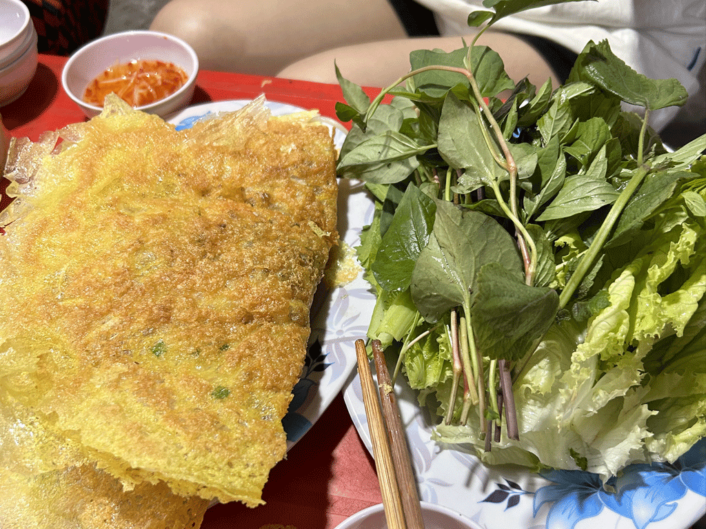
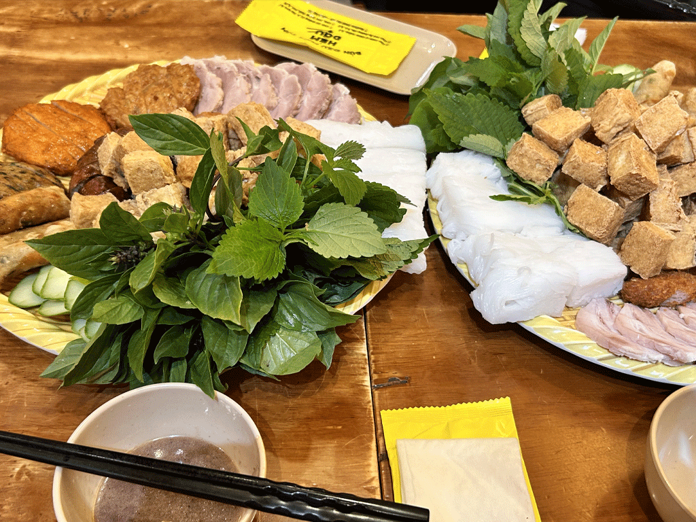
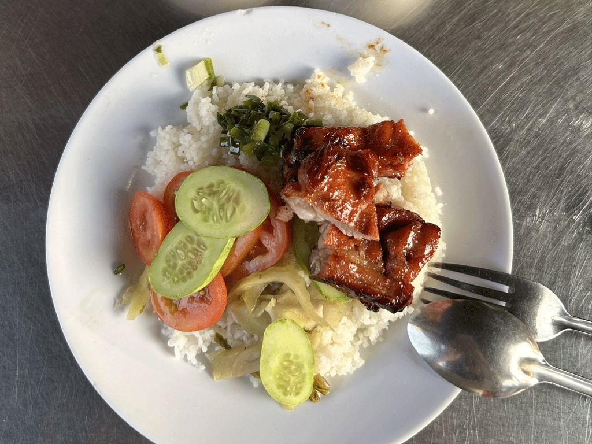
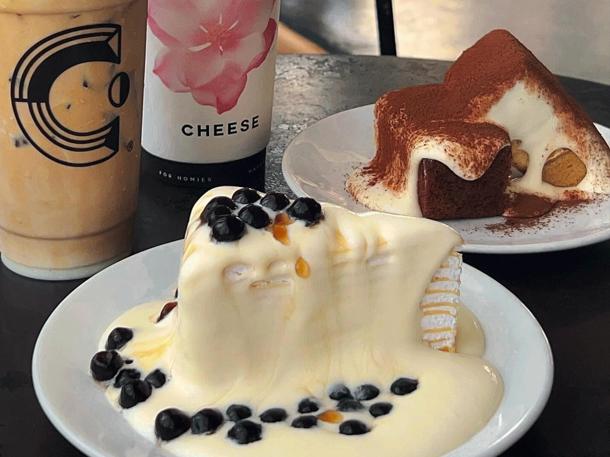
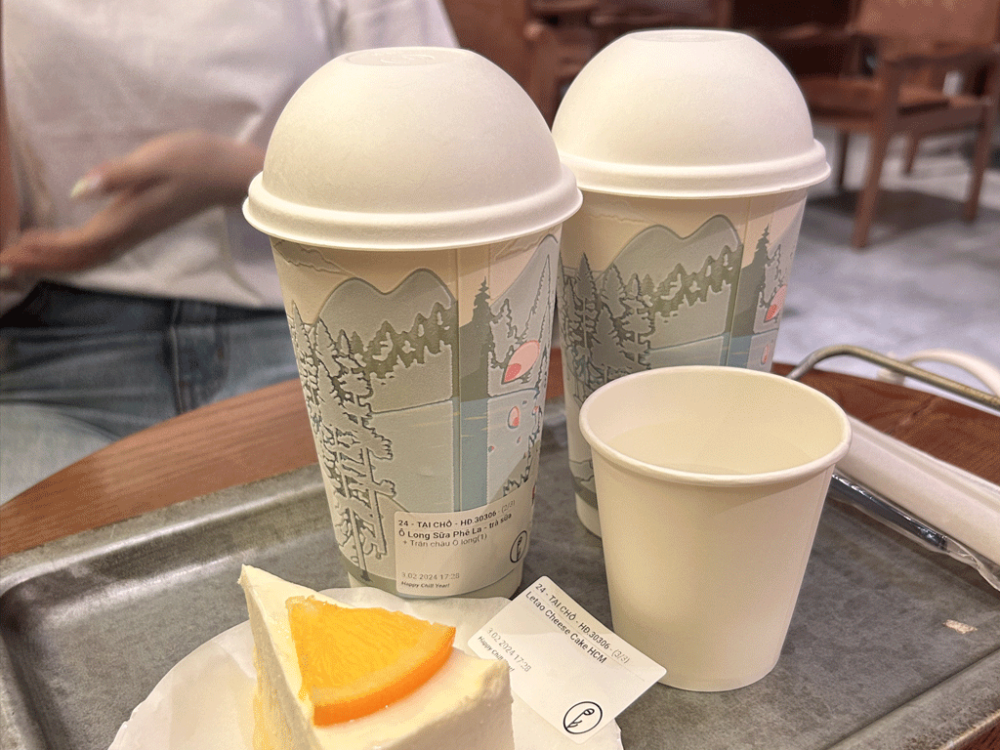

About
「Vietnam Info」は、ベトナムの魅力を日本の皆さまにお届けするために作られた情報サイトです。美しい自然、豊かな文化、美味しい料理など、ベトナムの魅力を余すことなく紹介し、次の旅行先としてベトナムを選ぶきっかけを提供します。
History
ベトナムは東南アジアのインドシナ半島に位置し、美しい自然、豊かな文化、そして長い歴史を持つ国です。首都ハノイと最大の都市ホーチミン市を中心に、国内には様々な魅力が広がっています。ハロン湾やサパの棚田、フーコック島などの絶景は訪れる人々を魅了し、ホイアン旧市街やフエ王宮などの歴史的遺産はベトナムの文化と伝統を感じさせてくれます。さらに、フォーやバインミー、生春巻きといった絶品グルメは世界中で愛されています。 温かい人々の笑顔とともに、冒険と癒しが両立するベトナム。訪れる人々に忘れられない体験を提供する、特別な旅先です。
Travel
北部 中部 南部
Food
- 
- 
- 
- 
- 